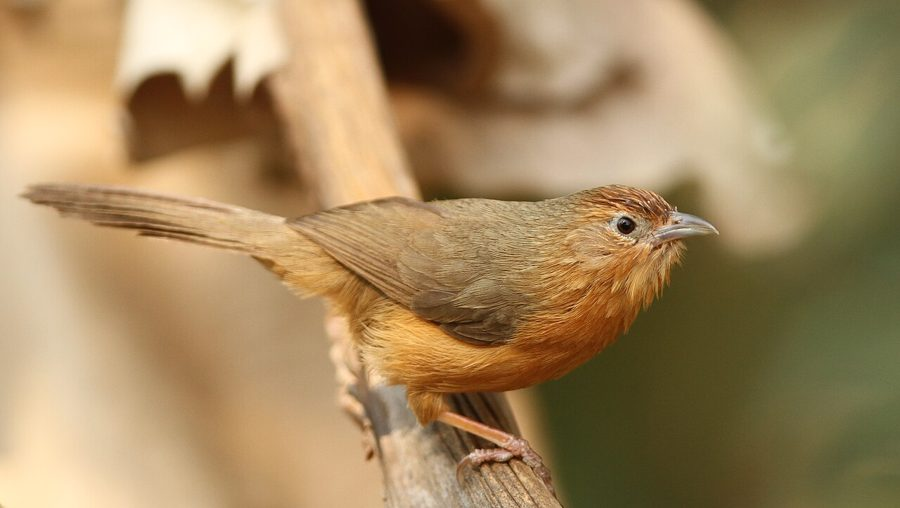

टॉनी-बेलीड बैबलरTawny-bellied Babbler
Dumetia hyperythra · Leiothrichidae · BRD-0216

- Scientific name वैज्ञानिक नाम
- Dumetia hyperythra (Franklin, 1831)
- Family कुल
- Leiothrichidae
- Hindi हिंदी
- टॉनी-बेलीड बैबलर
- Local names स्थानीय नाम
- tawny-bellied babbler, tawny bellied babbler, babbler
- Status here यहाँ की स्थिति
- native
- Movement आवागमन
- Resident, here all year
- Known from कहाँ दर्ज
- Others have published records from the Basti–Ayodhya districts बस्ती–अयोध्या के ज़िलों से दूसरों के प्रकाशित अभिलेख
- IUCN IUCN
- LC
- Review समीक्षा
- audited and independently read
When to look कब देखें
Present all year. साल भर मौजूद।
Uses and possibilities उपयोग और संभावनाएँ
Drawn from the documented uses in the profile below, where each is labelled traditional, current or a research lead. All uses →
Tell it apart from इनसे अलग पहचानें
टॉनी-बेलीड बैबलर / Tawny-bellied Babbler
Dumetia hyperythra (Franklin, 1831) — Leiothrichidae
टॉनी-बेलीड बैबलर — यह छोटी, भूरी चिड़िया पूर्वी उत्तर प्रदेश की झाड़ियों, बाँसों और सूखे जंगलों में साल भर पाई जाती है। इसकी सबसे बड़ी पहचान इसका गहरा भूरा-कत्थई पेट (tawny-rufous belly) और छोटी पूंछ है। यह शोर मचाने वाली चिड़िया है, जो अकेले या छोटे झुंड में घने पत्तों में रहती है और "चटर-चटर" की आवाज़ निकालती है।
Quick Identification त्वरित पहचान
| Feature | Description |
|---|---|
| Size | Small babbler; 11–13 cm total length |
| Plumage | Dark brown above; tawny-rufous belly (diagnostic) |
| Crown | Dark brown; slightly darker than back |
| Throat | White or off-white |
| Breast | Buff-brown; transition to tawny belly |
| Tail | Short, dark brown, slightly graduated |
| Behaviour | Skulking; stays in thick scrub and undergrowth |
| Voice | Loud, harsh chatter and calls |
Field tip: A small, dark brown babbler with a distinctive tawny or rufous belly, staying in scrub and thick vegetation. The tawny belly is diagnostic. Stays low in bushes and is more often heard than seen. Often found in small groups that chatter loudly.
हिंदी — कैसे पहचानें:
छोटी, काली चिड़िया; भूरा पेट।
झाड़ियों में रहती है।
ज़ोर से "चटर-चटर" करती है।
अकेले या छोटे झुंड में दिखता है।
Morphology आकारिकी
Biometrics:
| Measurement | Range |
|---|---|
| Total length | 110–130 mm |
| Wing (flattened chord) | 52–62 mm |
| Tail | 45–55 mm |
| Bill | 12–14 mm |
| Tarsus | 18–20 mm |
| Weight | 11–16 g |
Size: 11–13 cm long; wingspan 16–20 cm. Weight 11–16 g.
Plumage: Above dark brown, slightly darker on crown. Lores dusky. Throat white or pale. Breast buff-brown. Belly tawny-rufous or deep buff (diagnostic). Undertail coverts tawny-buff. Tail dark brown, short and slightly graduated.
Bill: Fairly stout, dark.
Legs and feet: Stout, brownish.
Sexes: Very similar; males slightly darker.
Vocalisations
- Call: Loud, harsh, rather unmusical chatter-chatter-chatter or chit-chit-chit. Continues at length, often given by multiple birds in a group.
- Alarm call: Sharp tswit-tswit.
- Song: Limited; mostly relies on loud chatter.
हिंदी: बहुत ज़ोर से चिल्लाती है। "चटर-चटर" आवाज़। कई चिड़ियाँ एक साथ चिल्लाती हैं।
Behaviour & Ecology व्यवहार और पारिस्थितिकी
Scrub specialist: Entirely dependent on scrub, dry undergrowth and dense vegetation. Gleaning insectivore that forages among twigs and leaves.
Social: Highly gregarious; usually seen in small groups of 5–10 birds, very noisy and conspicuous by voice.
Feeding: Small insects, spiders and insect larvae gleaned from branches, leaves and twigs. Occasionally seeds and berries.
Foraging behaviour: Moves through scrub, hopping from branch to branch, examining leaves and crevices for insects.
Roosting: In thick scrub or bamboo thickets.
Territorial: Resident and territorial; maintains group territories.
हिंदी: झुंड में रहता है। बहुत शोर मचाता है। झाड़ियों में कीड़े चुनता है।
Life Cycle / Phenology जीवन चक्र
Resident: Year-round resident; breeds locally (March–July).
Breeding: Nest is a cup of twigs and fibre, placed low in shrub or dense vegetation. Lays 3–4 eggs.
Clutch: 3–4 whitish eggs with brownish markings.
Incubation: 12–14 days.
Fledging: Chicks fledge in approximately 14–16 days.
Moult: Complete annual moult.
हिंदी: साल भर यहाँ रहता है। मार्च से जुलाई तक प्रजनन करता है।
Host Plants or Prey आहार
Primary food items:
- Small insects and insect larvae
- Spiders
- Small berries and seeds (occasionally)
- Caterpillars
Gleaned from twigs, leaves and branches in scrub habitat.
हिंदी: कीड़े और मकड़ियाँ खाता है। झाड़ियों में चुनकर खाना निकालता है।
Predators / Natural Enemies शत्रु
- Raptors: Small falcons and shrikes may prey on small birds
- Corvids: Crows may predate eggs and chicks
- Snakes: Likely predators of eggs and nestlings
Agricultural / Human Relevance कृषि प्रासंगिकता
Pest control: Assists in natural control of insects in scrub and agricultural margins through gleaning.
Habitat requirement: Depends on maintenance of scrub and undergrowth. Threatened by scrub clearance for agriculture.
Legal status: Protected under the Wildlife Protection Act 1972. Populations generally stable in areas with adequate scrub cover.
Expected Locally स्थानीय रूप से अपेक्षित
Not a field record. Written from published accounts for eastern Uttar Pradesh. No confirmed local sighting yet — if you have seen it, that is what the atlas needs.
अभी तक स्थानीय पुष्टि नहीं। यह विवरण प्रकाशित स्रोतों से है, किसी अवलोकन से नहीं।
GBIF holds published records from these districts. Expected year-round in scrubby areas, ravines with bamboo and undergrowth, and light cultivation with shrub cover. More conspicuous by voice (loud chatter) than by sight. Most active during early morning and late afternoon. The first local record would be a photograph showing the tawny belly and overall dark plumage, with place and date, submitted through the About page.
हिंदी: साल भर झाड़ियों में देखे जाने की उम्मीद है। आवाज़ से पहचानना आसान है। पहला रिकॉर्ड फोटोग्राफ के साथ तारीख़ और जगह दिखानी चाहिए।
Distribution वितरण
Global range: Indian subcontinent; resident from the Himalayas to the peninsula.
In India: Throughout the Indian peninsula at lower elevations; common in scrub habitat.
In Uttar Pradesh: Resident throughout the state; expected in scrub and dry areas.
In Basti district / eastern UP: Year-round resident in scrubby areas, bamboo thickets and cultivated margins with undergrowth.
Research Questions शोध प्रश्न
- What is the detailed diet composition and foraging efficiency of tawny-bellied babblers in different scrub habitats?
- How do group size and composition affect territory maintenance and breeding success?
- क्या झाड़ियों के साफ़ होने से इस चिड़िया की संख्या में कमी आती है?
- What is the role of tawny-bellied babblers in seed dispersal through consumption and defecation of berries?
- Are group members related (family groups) or unrelated? (Requires capture and genetic analysis.)
- क्या मौसम के बदलाव से इस चिड़िया की गायन आवाज़ में अंतर आता है?
Similar Species मिलती-जुलती प्रजातियाँ
| Species | Key Difference | Hindi | Field Rule | |
|---|---|---|---|---|
| Common Babbler (Argya caudata) | Larger; paler brown; long tail; different voice | — | Tawny-bellied babbler is smaller, darker, with tawny belly. Common babbler is larger and paler overall. | |
| [[jungle_babbler\ | Jungle Babbler]] (Argya earlei) | Larger; olive-brown; different habitat (jungle); different voice | — | Tawny-bellied is smaller and darker, in scrub not jungle. |
Field rule: Tawny-bellied babbler is a small, dark babbler with a distinctive tawny or rufous belly. If larger and paler with a long tail, it is likely a common babbler.
Taxonomy & Classification वर्गीकरण
Original description. Described by Franklin in 1831 in Proceedings of the Zoological Society of London as Babbler hyperythra. Type locality is India.
Subspecies. Two subspecies; D. h. hyperythra occurs in most of India including Uttar Pradesh.
Family and order placement. Order Passeriformes; family Leiothrichidae (laughing thrushes and babblers).
Phylogenetic notes. Genus Dumetia includes only this species and is related to other scrub-dwelling babblers.
IUCN status rationale. Least Concern. Widespread and common in suitable scrub habitat throughout the Indian subcontinent.
हिंदी: भारत के सभी हिस्सों में सामान्य चिड़िया है। कानूनी सुरक्षा में है।
Photo Gallery फोटो गैलरी
No photos yet — add field photos to media/species/tawny_bellied_babbler/ and run node scripts/sync_photos.js.
Wanted photos:
- Bird showing tawny belly
- Group in scrub habitat
- Close-up of head and plumage
- Bird foraging on low twigs
References संदर्भ
- Franklin, W. (1831). Proceedings of the Zoological Society of London, 1: 119.
- Ali, S. & Ripley, S. D. (1987). Handbook of the Birds of India and Pakistan. Vol. 6 (Crows to Finches). Oxford University Press, Delhi. Pp. 116–117.
- Grimmett, R., Inskipp, C. & Inskipp, T. (2011). Birds of the Indian Subcontinent (2nd edn). Oxford University Press, Delhi. Pp. 410.
- Rasmussen, P. C. & Anderton, J. C. (2012). Birds of South Asia: the Ripley Guide (2nd edn). Lynx Edicions, Barcelona. Vol. 2, Pp. 680.
- GBIF Occurrence Data — Dumetia hyperythra, India.
- IUCN Red List (2023). Dumetia hyperythra — BirdLife International. IUCN, Cambridge. Status: Least Concern.
Source file: species/fauna/birds/tawny_bellied_babbler.md